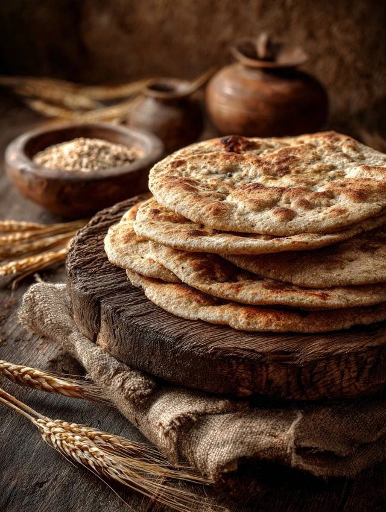
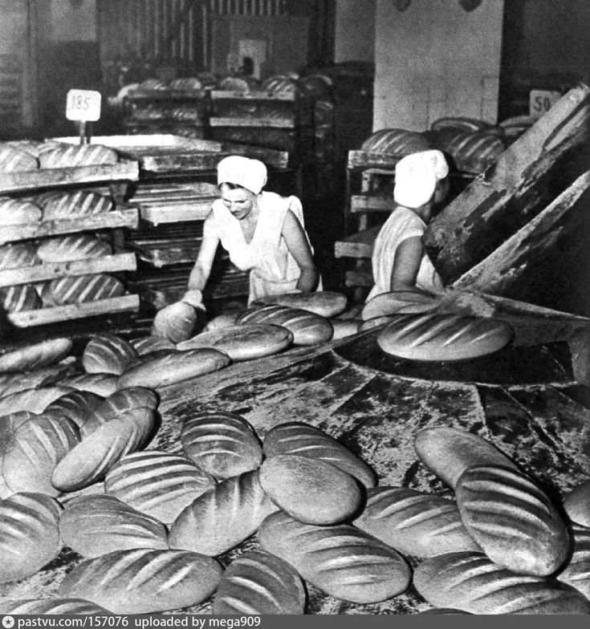
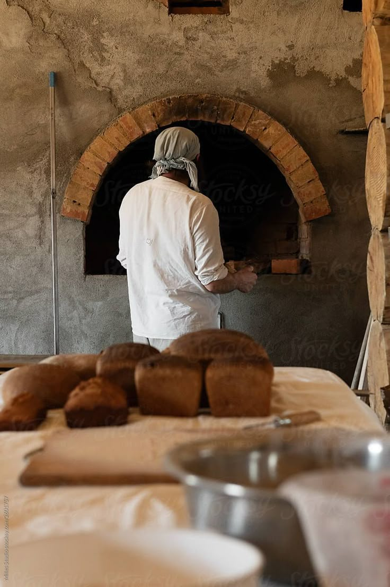

Origem do Pão
O pão acompanha a humanidade há milhares de anos. Sua história começou quando os seres humanos deixaram de ser nômades e passaram a cultivar grãos como trigo, cevada e aveia.
No início, esses grãos eram consumidos em forma de mingaus e bolos simples, até que novas técnicas de preparo foram desenvolvidas.
Há cerca de 6 mil anos, os egípcios descobriram acidentalmente a fermentação do trigo, criando o pão como conhecemos hoje.
Eles aperfeiçoaram suas receitas e o pão passou a ter grande importância na alimentação, na economia e na cultura.
O pão no Egito Antigo
No Egito Antigo, o pão era um alimento essencial e também era usado como forma de pagamento aos trabalhadores. Os egípcios desenvolveram diferentes tipos de pães e eram considerados grandes padeiros do mundo antigo.
O pão e a cultura
Com o passar do tempo, o pão ganhou significados religiosos e culturais em diferentes povos, sendo considerado símbolo de vida, partilha e sustento. Ele esteve presente em diversas tradições e representa a união entre as pessoas.
O padeiro e a história
Durante a Idade Média, os padeiros eram profissionais valorizados e importantes nas cidades. A produção do pão exigia conhecimento e técnicas especiais, tornando essa profissão muito respeitada.
O pão na política
O pão também esteve ligado a acontecimentos históricos e políticos, como a Revolução Francesa, quando a falta de alimentos e a escassez de pão contribuíram para revoltas populares.
O pão nos dias atuais
Atualmente, o pão continua sendo um dos alimentos mais consumidos no mundo, presente em diversas culturas e feito de várias formas.


